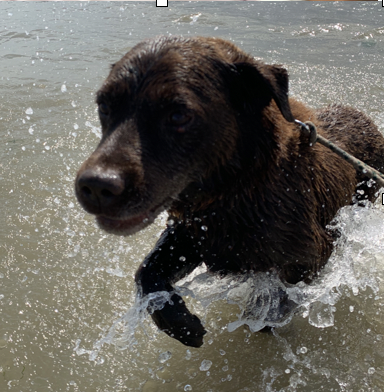
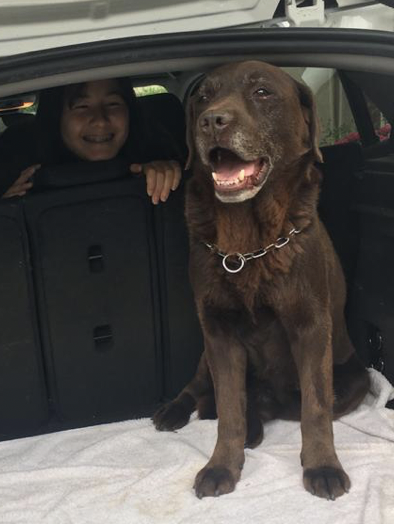

Ca c'est moi ! Quand j'avais 4/5 ans certes, mais quand même :)
Je suis née le 06 Mars 2005, à Lagny sur Marne, dans le département du 77. J'ai une grande soeur, Morgane née en 2002 et un chien né en 2009 qui s'appelle Kalin.
J'aime beaucoup la danse, la musique et la pâtisserie. J'ai fais 8 ans de danse et pleins d'autres sports aristiques (gym, GRS, aérobic... mais je détaille ca un peu plus loin). J'ai joué du piano également pendant 3ans. Enfin, depuis que je suis petite j'aime faire des gâteaux. Vous pouvez cliquer sur le lien ci-dessous pour voir les différents gâteaux que j'ai pu faire :
les gâteaux de MaewennVoici quelques photos de mon chien Kalin :
 J'ai fais mon collège et mon lycée dans le 77, à Bussy Saint Georges à Maurice Rondeau.
Puis, pour mes études superieures, j'ai choisi de faire le BBA de l'ESSEC ! J'aime beaucoup, je ne me vois pas ailleurs et j'ai hâte de continuer sur cette voix pour découvrir et vivre diverses expériences.
J'ai eu la chance de voyager dans différents pays, pour découvrir la culture de ces derniers. J'ai pu allé quelques fois aux Etats-Unis pour voir de la famille à Philadelphie, visiter New York, ou encore visiter et faire les parcs d'attractions à Miami. J'ai visiter une visité une ville bien moins développé et plus précaire, Bali. C'était une expérience totalement différente mais très enrichissante. Cette île indonésienne, remplie de rizières, de récifs et de temple était magnifique.
J'espère pouvoir continuer de découvrir pleins de pays pour voir de nouvelles cultures et paysages. J'adorerais par exemple aller en Corée du Sud, dans les pays du nord (Norvège, Suède) ou encore à Los Angeles et au Canada.